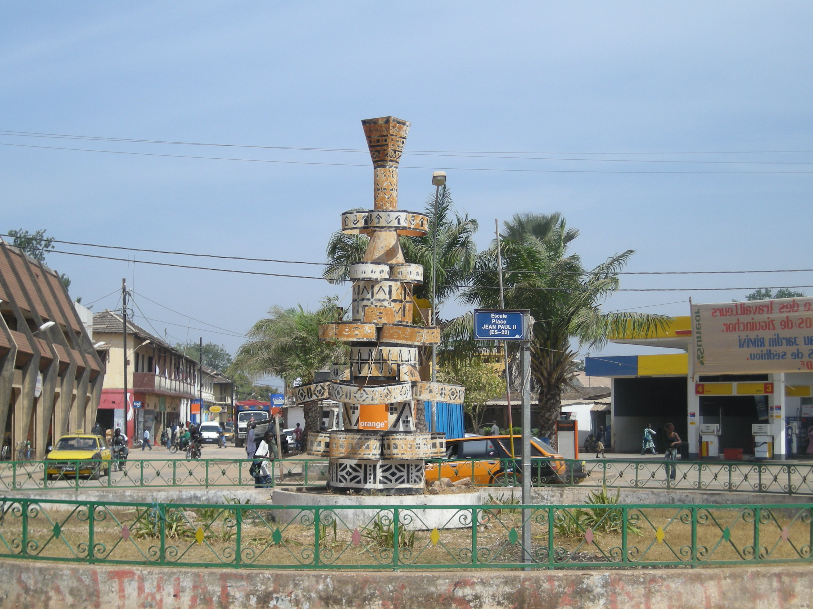

Ziguinchor est une ville de 205 294 habitants en 2013 du sud du Sénégal, chef-lieu du département de Ziguinchor de la région de Ziguinchor et de la région historique de la Casamance. Le maire actuel est Ousmane Sonko.